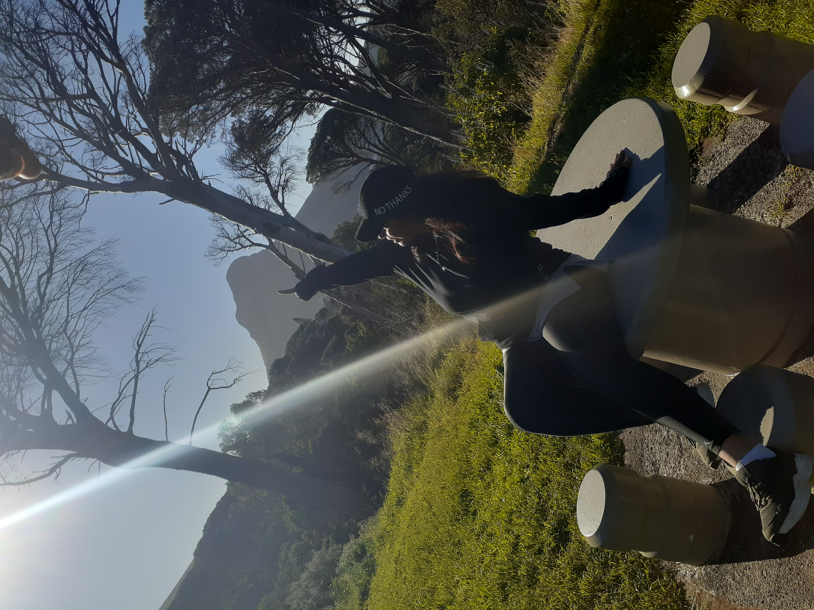
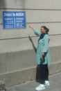
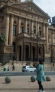
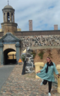

Zeenat Avontuur
Seoul

Seoul is situated in the northwest part of South Korea on the Han River. Seoul has the fastest average internet speed in the world. Home to sleek skyscrapers and shopping malls, as well as well-preserved royal palaces and Buddhist temples which will be a real sight to see. The South Korean capital is teeming with unique culture and modern comforts. Seoul has an extensive subway system, where notable landmarks are usually a few stops away from each other.
Arabic
I'd like to learn Arabic, because it will help me read the quran without needing to go and translate everything I read.
| Arabic | Translate | English |
|---|---|---|
| جَزَاكَ ٱللَّٰهُ | jazāka -llāh | Thank you |
| مرحبا | Marhaba | Hello |
| سلام | salam | peace |
Historical Places in Cape Town
District Six Museum
The District Six Museum Foundation was not established until 1989. It was established in 1994. The museum is reminiscent of the once vibrant multi-ethnic areas that were forcibly removed during apartheid in the 1960s and 1970s. The area of District 6 is partially divided into the suburbs of Walmer Estate, Sonnebloom, and Lower Blade, the rest of which is generally undeveloped land.
City Hall
Cape Town City Hall is a large Edwardian building in Cape Town city centre which was built in 1905. It is located on the Grand Parade to the west of the Castle and is built from honey-coloured oolitic limestone imported from Bath in England. The building was designed as the result of a public competition.
Castle of Good Hope
The Castle of Good Hope known locally as the Castle or Cape Town Castle is a bastion fort built in the 17th century in Cape Town, South Africa. Originally located on the coastline of Table Bay, following land reclamation the fort is now located inland.